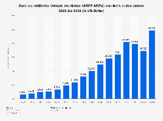

Ausstellung 4: Der Marktplatz der Daten
In der digitalen Ökonomie sind persönliche Daten die eigentliche Währung für vermeintlich kostenlose Dienste. Tech-Konzerne und Datenbroker sammeln diese Informationen systematisch, um sie an die Werbeindustrie weiterzuverkaufen. Der Wert der Daten richtet sich dabei nach ihrem Nutzen für gezieltes Marketing.
- Basis-Daten: E-Mail-Adressen (ca. 0,10 €) oder Geburtsdaten (ca. 0,01 €) dienen als Grundlage für demografische Profile und den direkten Kundenkontakt.
- Lebensereignisse: Informationen über Schwangerschaften oder Hochzeiten (bis zu 1,50 €) sind wertvoll, da sie anstehende Umbrüche im Kaufverhalten verraten.
- Premium-Daten: Konkrete Kaufabsichten (z. B. Autokauf oder Kredite; 2,00 bis 5,00 €) erzielen die höchsten Preise, da sie „Echtzeit-Targeting“ ermöglichen. Dabei werden Nutzer genau im Moment der Kaufentscheidung mit Werbung erreicht.
Der Profit entsteht also nicht durch den einzelnen Datensatz, sondern durch die algorithmische Kombination, die ein präzises Profil für maximale Beeinflussung erstellt.
Interaktiver Wert-Rechner
Um die abstrakte Datenökonomie begreifbar zu machen, wurde ein interaktives Museumstool in Form eines „Wert-Rechners“ entwickelt. Besucher können anonymisierte Daten wie Alter, Interessen und Freigabe-Einstellungen eingeben. Das Tool berechnet basierend auf realen Marktpreisen den exakten Wert ihres „digitalen Ichs“ und erstellt eine Quittung. Dies soll den Besuchern die Tragweite ihres Datenverlusts durch ein Aha-Erlebnis verdeutlichen.
Der „Average Revenue Per User“ (ARPU)
Einzelne Datensätze sind nur ein Teil des Ganzen: Die Kennzahl ARPU (Average Revenue Per User) beziffert, wie viel Umsatz eine Plattform pro Nutzer und Jahr durch personalisierte Werbung generiert. Europäische Nutzer sind aufgrund ihrer hohen Kaufkraft global besonders begehrt. Konzerne erzielen mit ihnen erhebliche Summen allein durch die passive Nutzung und das Klickverhalten.
Dynamische Preisgestaltung (Dynamic Pricing)

Daten werden nicht nur für Werbung genutzt, sondern führen auch zu direkten finanziellen Nachteilen für Verbraucher. Mithilfe von Algorithmen passen Unternehmen Preise (z. B. für Flüge oder Mietwagen) in Echtzeit an das jeweilige Nutzerprofil an. Faktoren wie das Endgerät, der Standort oder sogar der Akkustand dienen dazu, die individuelle Zahlungsbereitschaft zu ermitteln und die Preise künstlich anzuheben, sobald eine hohe Kaufkraft oder eine akute Dringlichkeit erkannt wird.
Daten-Wert-Rechner: Was ist Ihr Profil wert?
Persönliche Faktoren:
Dieser Wert ist ein Schätzwert basierend auf dem aktuellen ARPU (Average Revenue Per User) in der Werbeindustrie.